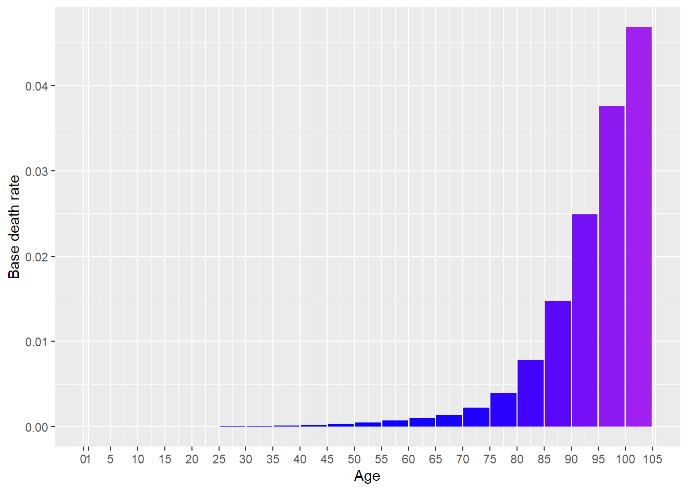

[auto-generated file]
Other heart disease is a death cause. It means that there is a certain probability that one dies from this.
Alternative names:
- Other heartd.
- Other heart disease
- OtherHeartDiseases
Categories
Other heart disease is part of the following death cause categories
Risk factors
In the model Other heart disease has the following risk factors
Number of deaths
In 2014 Other heart disease was responsible for 11.8% of the deaths in the US. Below is a plot of how prevalent the death was for different ages (Xu et al. 2016)

Definition
The definition of dying from Other heart disease is to get any of the following ICD codes as the main cause of death on one’s death certificate. The percentage is the proportion of the deaths from Other heart disease who falls under the ICD code
I0 (1.1%)
- I00: Rheumatic fever without heart involvement (0.0013%)
- I01: Rheumatic fever with heart involvement (0.0052%)
- I011: Acute rheumatic endocarditis (0.0042%)
- I018: Other acute rheumatic heart disease (0.00064%)
- I019: Acute rheumatic heart disease, unspecified (0.00032%)
- I02: Rheumatic chorea (0.00097%)
- I029: Rheumatic chorea without heart involvement (0.00097%)
- I05: Rheumatic mitral valve diseases (0.48%)
- I050: Rheumatic mitral stenosis (0.15%)
- I051: Rheumatic mitral insufficiency (0.011%)
- I052: Rheumatic mitral stenosis with insufficiency (0.0058%)
- I058: Other rheumatic mitral valve diseases (0.0055%)
- I059: Rheumatic mitral valve disease, unspecified (0.31%)
- I06: Rheumatic aortic valve diseases (0.022%)
- I060: Rheumatic aortic stenosis (0.015%)
- I061: Rheumatic aortic insufficiency (0.0016%)
- I062: Rheumatic aortic stenosis with insufficiency (0.00032%)
- I068: Other rheumatic aortic valve diseases (0.00032%)
- I069: Rheumatic aortic valve disease, unspecified (0.0042%)
- I07: Rheumatic tricuspid valve diseases (0.12%)
- I070: Rheumatic tricuspid stenosis (0.00032%)
- I071: Rheumatic tricuspid insufficiency (0.098%)
- I072: Rheumatic tricuspid stenosis and insufficiency (0.00032%)
- I078: Other rheumatic tricuspid valve diseases (0.013%)
- I079: Rheumatic tricuspid valve disease, unspecified (0.0074%)
- I08: Multiple valve diseases (0.35%)
- I080: Rheumatic disorders of both mitral and aortic valves (0.26%)
- I081: Rheumatic disorders of both mitral and tricuspid valves (0.04%)
- I082: Rheumatic disorders of both aortic and tricuspid valves (0.0074%)
- I083: 1 Comb rheumatic disord of mitral, aortic and tricuspid valves Combined rheumatic disorders of mitral, aortic and tricuspid valves (0.02%)
- I088: Other rheumatic multiple valve diseases (0.0016%)
- I089: Rheumatic multiple valve disease, unspecified (0.017%)
- I09: Other rheumatic heart diseases (0.082%)
- I090: Rheumatic myocarditis (0.0032%)
- I091: Rheumatic diseases of endocardium, valve unspecified (0.026%)
- I098: Other specified rheumatic heart diseases (0.00032%)
- I099: Rheumatic heart disease, unspecified (0.053%)
I1 (24.0%)
- I10: Essential (primary) hypertension (6.3%)
- I11: Hypertensive heart disease (13.0%)
- I110: Hypertensive heart disease with heart failure (4.0%)
- I119: Hypertensive heart disease without heart failure (8.5%)
- I12: Hypertensive chronic kidney disease (3.4%)
- I120: Hypertensive chronic kidney disease with stage 5 chronic kidney disease or end stage renal disease (3.4%)
- I129: Hypertensive chronic kidney disease with stage 1 through stage 4 chronic kidney disease, or unspecified chronic kidney disease (0.082%)
- I13: Hypertensive heart and chronic kidney disease (1.4%)
- I130: Hypertensive heart and chronic kidney disease with heart failure and stage 1 through stage 4 chronic kidney disease, or unspecified chronic kidney disease (0.057%)
- I131: Hypertensive heart and chronic kidney disease without heart failure (0.52%)
- I132: Hypertensive heart and chronic kidney disease with heart failure and with stage 5 chronic kidney disease, or end stage renal disease (0.78%)
- I139 (0.062%)
- I15: Secondary hypertension (0.0042%)
- I150: Renovascular hypertension (0.0032%)
- I159: Secondary hypertension, unspecified (0.00097%)
I26: Pulmonary embolism (2.6%)
- I260: Pulmonary embolism with acute cor pulmonale (0.011%)
- I269: Pulmonary embolism without acute cor pulmonale (2.6%)
I27: Other pulmonary heart diseases (2.5%)
- I270: Primary pulmonary hypertension (0.11%)
- I271: Kyphoscoliotic heart disease (0.018%)
- I272: Other secondary pulmonary hypertension (2.0%)
- I278: Other specified pulmonary heart diseases (0.0093%)
- I279: Pulmonary heart disease, unspecified (0.38%)
I28: Other diseases of pulmonary vessels (0.034%)
- I280: Arteriovenous fistula of pulmonary vessels (0.00064%)
- I281: Aneurysm of pulmonary artery (0.0055%)
- I288: Other diseases of pulmonary vessels (0.017%)
- I289: Disease of pulmonary vessels, unspecified (0.011%)
I3 (8.7%)
- I30: Acute pericarditis (0.02%)
- I300: Acute nonspecific idiopathic pericarditis (0.00097%)
- I301: Infective pericarditis (0.009%)
- I308: Other forms of acute pericarditis (0.0042%)
- I309: Acute pericarditis, unspecified (0.0055%)
- I31: Other diseases of pericardium (0.2%)
- I310: Chronic adhesive pericarditis (0.00064%)
- I311: Chronic constrictive pericarditis (0.013%)
- I312: Hemopericardium, not elsewhere classified (0.011%)
- I313: Pericardial effusion (noninflammatory) (0.09%)
- I318: Other specified diseases of pericardium (0.0013%)
- I319: Disease of pericardium, unspecified (0.088%)
- I33: Acute and subacute endocarditis (0.42%)
- I330: Acute and subacute infective endocarditis (0.41%)
- I339: Acute and subacute endocarditis, unspecified (0.014%)
- I34: Nonrheumatic mitral valve disorders (0.76%)
- I340: Nonrheumatic mitral (valve) insufficiency (0.64%)
- I341: Nonrheumatic mitral (valve) prolapse (0.062%)
- I342: Nonrheumatic mitral (valve) stenosis (0.0061%)
- I348: Other nonrheumatic mitral valve disorders (0.03%)
- I349: Nonrheumatic mitral valve disorder, unspecified (0.016%)
- I35: Nonrheumatic aortic valve disorders (5.5%)
- I350: Nonrheumatic aortic (valve) stenosis (4.7%)
- I351: Nonrheumatic aortic (valve) insufficiency (0.17%)
- I352: Nonrheumatic aortic (valve) stenosis with insufficiency (0.024%)
- I358: Other nonrheumatic aortic valve disorders (0.081%)
- I359: Nonrheumatic aortic valve disorder, unspecified (0.56%)
- I36: Nonrheumatic tricuspid valve disorders (0.0077%)
- I361: Nonrheumatic tricuspid (valve) insufficiency (0.0058%)
- I368: Other nonrheumatic tricuspid valve disorders (0.00097%)
- I369: Nonrheumatic tricuspid valve disorder, unspecified (0.00097%)
- I37: Nonrheumatic pulmonary valve disorders (0.0048%)
- I370: Nonrheumatic pulmonary valve stenosis (0.0013%)
- I371: Nonrheumatic pulmonary valve insufficiency (0.0019%)
- I378: Other nonrheumatic pulmonary valve disorders (0.00032%)
- I379: Nonrheumatic pulmonary valve disorder, unspecified (0.0013%)
- I38: Endocarditis, valve unspecified (1.8%)
I4 (23.0%)
- I40: Acute myocarditis (0.067%)
- I400: Infective myocarditis (0.045%)
- I401: Isolated myocarditis (0.0055%)
- I408: Other acute myocarditis (0.00097%)
- I409: Acute myocarditis, unspecified (0.015%)
- I42: Cardiomyopathy (7.5%)
- I420: Dilated cardiomyopathy (1.1%)
- I421: Obstructive hypertrophic cardiomyopathy (0.049%)
- I422: Other hypertrophic cardiomyopathy (0.26%)
- I423: Endomyocardial (eosinophilic) disease (0.0029%)
- I424: Endocardial fibroelastosis (0.012%)
- I425: Other restrictive cardiomyopathy (0.062%)
- I426: Alcoholic cardiomyopathy (0.17%)
- I427: Cardiomyopathy due to drug and external agent (0.0045%)
- I428: Other cardiomyopathies (0.056%)
- I429: Cardiomyopathy, unspecified (5.7%)
- I44: Atrioventricular and left bundle-branch block (0.18%)
- I440: Atrioventricular block, first degree (0.0026%)
- I441: Atrioventricular block, second degree (0.0055%)
- I442: Atrioventricular block, complete (0.15%)
- I443: Other and unspecified atrioventricular block (0.02%)
- I444: Left anterior fascicular block (0.00032%)
- I447: Left bundle-branch block, unspecified (0.0052%)
- I45: Other conduction disorders (0.42%)
- I451: Other and unspecified right bundle-branch block (0.0039%)
- I452: Bifascicular block (0.00064%)
- I453: Trifascicular block (0.00032%)
- I454: Nonspecific intraventricular block (0.0032%)
- I455: Other specified heart block (0.0019%)
- I456: Pre-excitation syndrome (0.013%)
- I458: Other specified conduction disorders (0.35%)
- I459: Conduction disorder, unspecified (0.051%)
- I46: Cardiac arrest (5.0%)
- I461 (0.5%)
- I469: Cardiac arrest, cause unspecified (4.5%)
- I47: Paroxysmal tachycardia (0.26%)
- I471: Supraventricular tachycardia (0.051%)
- I472: Ventricular tachycardia (0.2%)
- I479: Paroxysmal tachycardia, unspecified (0.0013%)
- I48: Atrial fibrillation and flutter (7.0%)
- I49: Other cardiac arrhythmias (3.1%)
- I490: Ventricular fibrillation and flutter (0.45%)
- I491: Atrial premature depolarization (0.00032%)
- I493: Ventricular premature depolarization (0.00097%)
- I495: Sick sinus syndrome (0.14%)
- I498: Other specified cardiac arrhythmias (0.046%)
- I499: Cardiac arrhythmia, unspecified (2.5%)
I5 (28.0%)
- I50: Heart failure (22.0%)
- I500 (19.0%)
- I501: Left ventricular failure (0.075%)
- I509: Heart failure, unspecified (2.6%)
- I51: Complications and ill-defined descriptions of heart disease (6.1%)
- I510: Cardiac septal defect, acquired (0.0093%)
- I511: Rupture of chordae tendineae, not elsewhere classified (0.0048%)
- I512: Rupture of papillary muscle, not elsewhere classified (0.0052%)
- I513: Intracardiac thrombosis, not elsewhere classified (0.015%)
- I514: Myocarditis, unspecified (0.15%)
- I515: Myocardial degeneration (0.052%)
- I516 (2.2%)
- I517: Cardiomegaly (0.6%)
- I518: Other ill-defined heart diseases (0.43%)
- I519: Heart disease, unspecified (2.6%)
I7 (8.2%)
- I70: Atherosclerosis (2.0%)
- I700: Atherosclerosis of aorta (0.022%)
- I701: Atherosclerosis of renal artery (0.0071%)
- I702: Atherosclerosis of native arteries of the extremities (0.046%)
- I708: Atherosclerosis of other arteries (0.00064%)
- I709: Other and unspecified atherosclerosis (2.0%)
- I71: Aortic aneurysm and dissection (3.2%)
- I710: Dissection of aorta (1.1%)
- I711: Thoracic aortic aneurysm, ruptured (0.16%)
- I712: Thoracic aortic aneurysm, without rupture (0.14%)
- I713: Abdominal aortic aneurysm, ruptured (0.82%)
- I714: Abdominal aortic aneurysm, without rupture (0.43%)
- I715: Thoracoabdominal aortic aneurysm, ruptured (0.022%)
- I716: Thoracoabdominal aortic aneurysm, without rupture (0.044%)
- I718: Aortic aneurysm of unspecified site, ruptured (0.29%)
- I719: Aortic aneurysm of unspecified site, without rupture (0.2%)
- I72: Other aneurysm (0.21%)
- I720: Aneurysm of carotid artery (0.01%)
- I721: Aneurysm of artery of upper extremity (0.00032%)
- I722: Aneurysm of renal artery (0.011%)
- I723: Aneurysm of iliac artery (0.032%)
- I724: Aneurysm of artery of lower extremity (0.0097%)
- I725 (0.011%)
- I728: Aneurysm of other specified arteries (0.026%)
- I729: Aneurysm of unspecified site (0.11%)
- I73: Other peripheral vascular diseases (2.3%)
- I730: Raynaud’s syndrome (0.0042%)
- I731: Thromboangiitis obliterans [Buerger’s disease] (0.0071%)
- I738: Other specified peripheral vascular diseases (0.0039%)
- I739: Peripheral vascular disease, unspecified (2.3%)
- I74: Arterial embolism and thrombosis (0.18%)
- I740: Embolism and thrombosis of abdominal aorta (0.0093%)
- I741: Embolism and thrombosis of other and unspecified parts of aorta (0.044%)
- I742: 1 Embolism and thrombosis of arteries of the upper extremities Embolism and thrombosis of arteries of the upper extremities (0.00097%)
- I743: 1 Embolism and thrombosis of arteries of the lower extremities Embolism and thrombosis of arteries of the lower extremities (0.025%)
- I744: Embolism and thrombosis of arteries of extremities, unspecified (0.0026%)
- I745: Embolism and thrombosis of iliac artery (0.0026%)
- I748: Embolism and thrombosis of other arteries (0.0081%)
- I749: Embolism and thrombosis of unspecified artery (0.087%)
- I77: Other disorders of arteries and arterioles (0.3%)
- I770: Arteriovenous fistula, acquired (0.033%)
- I771: Stricture of artery (0.026%)
- I772: Rupture of artery (0.04%)
- I773: Arterial fibromuscular dysplasia (0.0035%)
- I774: Celiac artery compression syndrome (0.00097%)
- I776: Arteritis, unspecified (0.086%)
- I778: Other specified disorders of arteries and arterioles (0.026%)
- I779: Disorder of arteries and arterioles, unspecified (0.084%)
- I78: Diseases of capillaries (0.024%)
- I780: Hereditary hemorrhagic telangiectasia (0.015%)
- I781: Nevus, non-neoplastic (0.0032%)
- I788: Other diseases of capillaries (0.0055%)
- I789: Disease of capillaries, unspecified (0.00032%)
I8 (1.3%)
- I80: Phlebitis and thrombophlebitis (0.96%)
- I801: Phlebitis and thrombophlebitis of femoral vein (0.0052%)
- I802: Phlebitis and thrombophlebitis of other and unspecified deep vessels of lower extremities (0.85%)
- I803: Phlebitis and thrombophlebitis of lower extremities, unspecified (0.09%)
- I808: Phlebitis and thrombophlebitis of other sites (0.0016%)
- I809: Phlebitis and thrombophlebitis of unspecified site (0.013%)
- I81: Portal vein thrombosis (0.046%)
- I82: Other venous embolism and thrombosis (0.069%)
- I820: Budd-Chiari syndrome (0.0087%)
- I822: Embolism and thrombosis of vena cava and other thoracic veins (0.0048%)
- I823: Embolism and thrombosis of renal vein (0.00097%)
- I828: Embolism and thrombosis of other specified veins (0.018%)
- I829: Embolism and thrombosis of unspecified vein (0.036%)
- I83: Varicose veins of lower extremities (0.048%)
- I830: Varicose veins of lower extremities with ulcer (0.0093%)
- I831: Varicose veins of lower extremities with inflammation (0.0048%)
- I832: Varicose veins of lower extremities with both ulcer and inflammation (0.0019%)
- I839: Asymptomatic varicose veins of lower extremities (0.032%)
- I84 (0.0048%)
- I841 (0.00032%)
- I842 (0.00032%)
- I848 (0.0013%)
- I849 (0.0029%)
- I85: Esophageal varices (0.056%)
- I850: Esophageal varices (0.038%)
- I859 (0.018%)
- I86: Varicose veins of other sites (0.011%)
- I864: Gastric varices (0.0097%)
- I868: Varicose veins of other specified sites (0.0013%)
- I87: Other disorders of veins (0.041%)
- I871: Compression of vein (0.01%)
- I872: Venous insufficiency (chronic) (peripheral) (0.013%)
- I878: Other specified disorders of veins (0.015%)
- I879: Disorder of vein, unspecified (0.0019%)
- I88: Nonspecific lymphadenitis (0.0013%)
- I880: Nonspecific mesenteric lymphadenitis (0.00064%)
- I888: Other nonspecific lymphadenitis (0.00032%)
- I889: Nonspecific lymphadenitis, unspecified (0.00032%)
- I89: Other noninfective disorders of lymphatic vessels and lymph nodes (0.039%)
- I890: Lymphedema, not elsewhere classified (0.032%)
- I891: Lymphangitis (0.00064%)
- I898: Other specified noninfective disorders of lymphatic vessels and lymph nodes (0.0055%)
- I899: Noninfective disorder of lymphatic vessels and lymph nodes, unspecified (0.00097%)
I9 (0.2%)
- I95: Hypotension (0.093%)
- I950: Idiopathic hypotension (0.00032%)
- I951: Orthostatic hypotension (0.01%)
- I958: Other hypotension (0.0064%)
- I959: Hypotension, unspecified (0.076%)
- I99: Other and unspecified disorders of circulatory system (0.1%)
Source: Xu et al. (2016), (“ICD Order Files 2014,” n.d.)
Interaction
The combined risk ratio of all risk factors is computed using the formula
\[
RR=RR_{\text{Greens}}
\]
The normalization factor is based on the joint distribution of all the risk factors and is computed using the formula
\[
P=P_{\text{Greens}}
\]
References
Xu, Jiaquan, Kenneth D Kochanek, Sherry L Murphy, and Betzaida Tejada-Vera. 2016. “Deaths: Final Data for 2014.” National Vital Statistics Reports 65 (4).